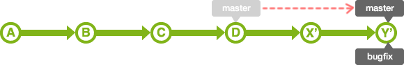

我们修改完bug后的bugfix分支，最后要合并回master分支。合并分支有2种方法：使用merge或rebase。使用这2种方法，合并后分支的历史记录会有很大的差别。
merge
使用merge可以合并多个历史记录的流程。
如下图所示，bugfix分支是从master分支分叉出来的。

合并 bugfix分支到master分支时，如果master分支的状态没有被更改过，那么这个合并是非常简单的。 bugfix分支的历史记录包含master分支所有的历史记录，所以通过把master分支的位置移动到bugfix的最新分支上，Git 就会合并。这样的合并被称为fast-forward（快进）合并。
1 | $ git merge bugfix |

但是，master 分支的历史记录有可能在 bugfix 分支分叉出去后有新的更新。这种情况下，要把 master 分支的修改内容和 bugfix 分支的修改内容汇合起来。

因此，合并两个修改会生成一个提交。这时，master分支的HEAD会移动到该提交上。（注意：此时合并会产生文件冲突，解决后，然后提交master指向E点）

执行合并时，如果设定了non fast-forward选项，即使在能够fast-forward合并的情况下也会生成新的提交并合并。

执行non fast-forward后，分支会维持原状。那么要查明在这个分支里的操作就很容易了。
rebase
跟merge的例子一样，如下图所示，bugfix分支是从master分支分叉出来的。

如果使用rebase方法进行分支合并，会出现下图所显示的历史记录。现在我们来简单地讲解一下合并的流程吧。

首先，rebase bugfix分支到master分支, bugfix分支的历史记录会添加在master分支的后面。如图所示，历史记录成一条线，相当整洁。
这时移动提交X和Y有可能会发生冲突，所以需要修改各自的提交时发生冲突的部分。

rebase之后，master的HEAD位置不变。因此，要合并master分支和bugfix分支，即是将master的HEAD移动到bugfix的HEAD这里。

Merge和rebase都是合并历史记录，但是各自的特征不同。
- merge
保持修改内容的历史记录，但是历史记录会很复杂。 - rebase
历史记录简单，是在原有提交的基础上将差异内容反映进去。
因此，可能导致原本的提交内容无法正常运行。
您可以根据开发团队的需要分别使用merge和rebase。
例如，想简化历史记录，
- 在topic分支中更新merge分支的最新代码，请使用rebase。
- 向merge分支导入topic分支的话，先使用rebase，再使用merge。
参考链接：https://backlog.com/git-tutorial/cn/stepup/stepup1_4.html